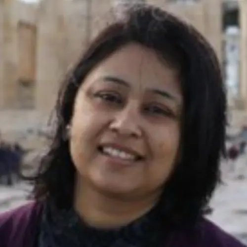

India member
Anamika Barua
Name: Anamika Barua Highest qualification and awarding university PhD ; University of Leeds, UK Designation Professor Employer IIT Guwahati Contact details: Email: WhatsApp number/Mobile number abarua@iitg.ac.in +91 361 258 2563 Home page link on your employer web site if avai…
Published 5 July 2022 · Updated 7 April 2025

| Name: | Anamika Barua |
| Highest qualification and awarding university | PhD ; University of Leeds, UK |
| Designation | Professor |
| Employer | IIT Guwahati |
Contact details:
|
abarua@iitg.ac.in |
| +91 361 258 2563 | |
| Home page link on your employer web site if available | https://www.iitg.ac.in/iitg_faculty_details?name=Anamika-Barua&fac=UFREL2RaU3IrT3J6akQ4Y2VUYW1QZz09 |
| Key areas of interest | Climate Change and Water security, Ecological Footprint, Virtual Water flows through trade, Water governance including transboundary water governance |
| Web links for your research profile on Google scholar; ORCID or Research Gate (if available); only one of them please. | https://scholar.google.co.in/citations?user=YByehLYAAAAJ&hl=en |
Dr. Anamika Barua is a Professor at the Dept. of Humanities and Social Sciences, Indian Institute of Technology Guwahati (IITG), India. Trained in Ecological Economics, her research interest lies in understanding how political, social and economic factors shapes environmental decisions and change, particularly related to water. She has published peer-reviewed articles in several leading international journals, and have recently edited a book on ‘Climate Change Governance and Adaptation’ published by CRC press.
Research Project
- Science Communication in Brahmaputra River Basin funded by DUPC, IHE Delft, The Netherlands.
- Vulnerability Assessment in India : State Level Profiling – DST and Swiss Development Cooperation.
- Brahmaputra Dialogue – The World Bank.
Key Publications/Reports
- Sumit Vij, Jeroen Warner & Anamika Barua (2020) Power in water diplomacy, Water International, 45:4, 249- 253, DOI: 10.1080/02508060.2020.1778833
- Anamika Barua, Arundhati Deka, Vishaka Gulati, Sumit Vij, Xiawei Liao and Halla Maher Qaddumi. (2019). Re-Interpreting Cooperation in Transboundary Waters: Bringing Experiences from the Brahmaputra Basin. Water 11, (12) : 2589
- Anamika Barua, Rozemarijn ter Horst, Jenniver Sehring, Christian Bréthaut, Lena Salamé, Aaron Wolf, Barbara Janusz Pawletta, Emmanuel Manzungu and Alan Nicol. (2019). Universities’ partnership: the role of academic institutions in water cooperation and diplomacy. International journal of water resources development. 1-7
- Anamika Barua (2018), “Water Diplomacy as an approach to regional cooperation in South Asia: A case from Brahmaputra Basin, Journal of Hydrology, Vol 567, pp 60-70, https://authors.elsevier.com/a/1Xtj052cuJPUr
- Suparna Katyaini and Anamika Barua (2017), “Assessment of Inter-State Virtual Water Flows Embedded in Agriculture to Mitigate Water Scarcity in India (1996-2014)”, Water Resour. Res., 53, (8)